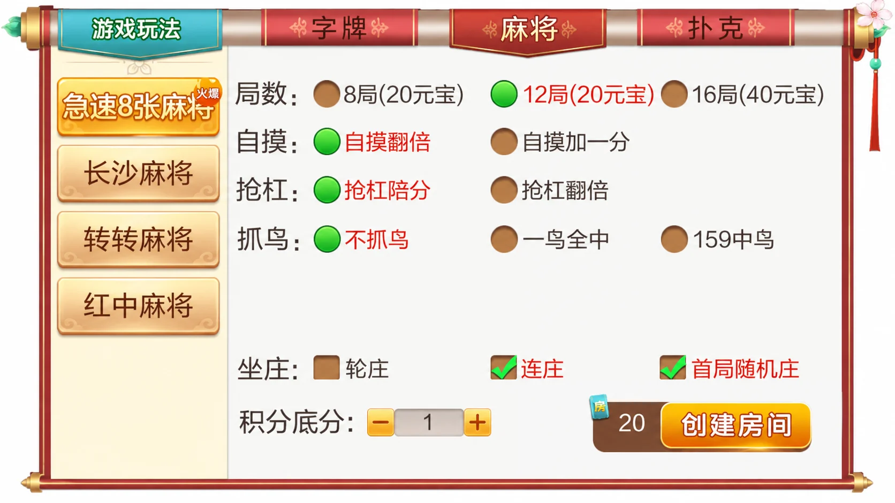
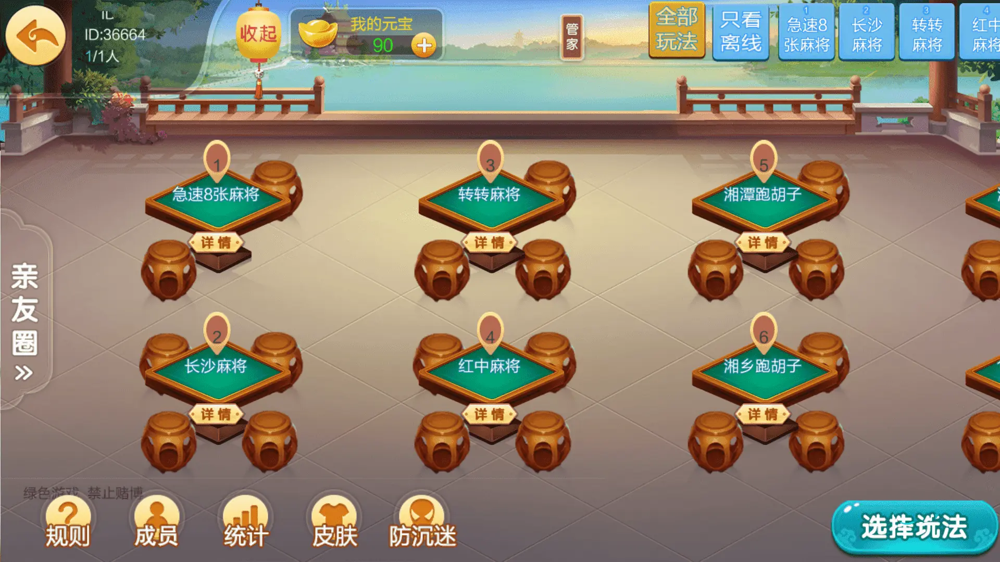

七星系列 · 地区界面与技术笔记
七星湘潭：两级菜单与选择状态
以11项清单与红金卷轴界面为例，讨论分类切换后如何保留有效选择。
11项内容与三类入口
湘潭版本清单包含4项麻将、3项字牌和4项扑克，共11项。麻将为急速8张麻将、长沙麻将、转转麻将、红中麻将；字牌为湘潭跑胡子、湘乡跑胡子、湘乡告胡子；扑克为11张跑得快、欢乐斗地主、跑得快、湘潭三打哈。
相比主要讨论名称整理的益阳专题，湘潭配图提供了另一种界面组织：红金卷轴把“字牌、麻将、扑克”放在顶部，具体游戏在左侧，规则放在右侧。它适合讨论两级选择状态与切换后的有效选项，不需要假定原工程内部采用了某种框架。
顶部分类、左侧游戏、右侧规则
规则图中麻将分类被突出显示，左侧列出四个麻将入口。右侧内容包含局数、自摸、抢杠、抓鸟和坐庄选项。桌台页采用庭院与木桌视觉风格，湘潭跑胡子和湘乡跑胡子分别有独立桌台名称。两张图展示的是不同层级：玩法选择与房间入口。




规则图为AI整理的截图局部，不冒充原始截图；桌台图仅做格式压缩。群组ID36664及房间序号保留原状，不作为用户ID替换。元宝、积分等原有标签没有改成其他含义，实际获取与兑换机制未核查，不将该版本宣称为纯房卡。
切换分类时，避免旧游戏仍然被选中
两级菜单的一种常见问题是：从麻将切到字牌后，界面标题已经更新，内部仍保留麻将游戏标识。可采用明确的选择规则：旧选择仍属于新分类则保留，否则选择新分类第一项；新分类为空时返回空选择，创建入口保持不可用。
下面的独立示例只演示菜单状态转换，目录与标识是示例数据，不代表七星原工程的接口。实际创建房间时还需要另行校验该玩法的配置；这个函数不负责费用、积分或对局处理。
export function selectCategory(catalog, category, previousId) {
const games = catalog[category];
if (!Array.isArray(games) || games.some(id => typeof id !== 'string' || !id))
throw new TypeError('Invalid category');
if (new Set(games).size !== games.length) throw new TypeError('Duplicate game ID');
return { category, gameId: games.includes(previousId) ? previousId : (games[0] ?? null) };
}
独立菜单状态示例通过10项断言，覆盖保留选择、跨分类切换、空目录、未知分类、重复ID与无效ID，并检查输入目录未被修改。
视觉上可以同步更新分类高亮、游戏按钮和右侧标题；规则表单应按新游戏标识重新加载，不能仅更换标题。键盘焦点也应保留在当前可见按钮上，避免隐藏选项仍能被操作。这些属于可供实现时采用的建议，不是对截图背后工程的验证结论。
资料能证明与不能证明的内容
配图支持界面布局、显示名称和可见选项的描述，无法证明每项规则已经完整实现，也不能证明服务端校验、兼容性或线上稳定性。本文没有取得、构建或运行第三方工程，不把介绍中的可搭建宣传作为测试结果。